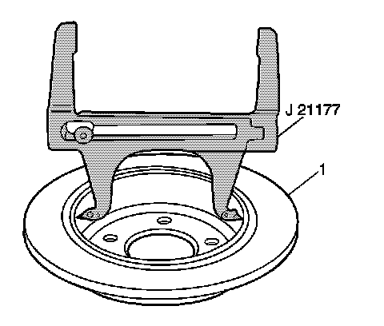
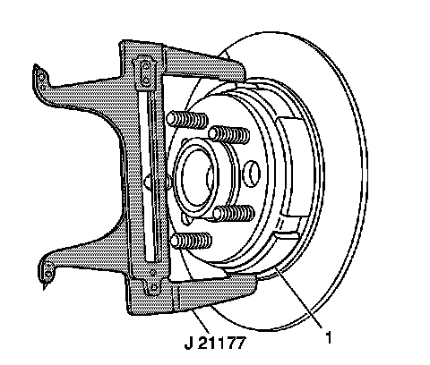

Parking Brake System: Adjustments
Park Brake Adjustment
Tools Required
J 21177-A Drum To Brake Shoe Clearance Gage
1. Adjustments to the park brake shoe are not necessary after replacing the park brake lever or park brake cables. The park brake is adjusted automatically by cycling the park brake lever three times.
2. DO not operate the park brake lever with the rear disc brake rotor(s) removed.
3. Apply and fully release the parking brake three times.
4. Verify that the parking brake pedal releases completely.
5. Raise and suitably support the vehicle. Refer to Lifting and Jacking the Vehicle (Service and Repair) .
6. Remove the rear tire and wheel assembly. Refer to Tire and Wheel Removal and Installation (Service and Repair) .
7. Remove the rear brake caliper brackets. Refer to Rear Brake Caliper Bracket Replacement (Rear Brake Caliper Bracket Replacement) .
8. Remove the rear brake rotors (1). Refer to Rear Brake Rotor Replacement (Service and Repair) .

9. Set the J 21177-A inside of the park brake drum at the widest point.
* Place the contacts on the tool to the widest point of the drum.
* Tighten the set screw on the tool to ensure the proper measurement when removing the tool from the drum.

10. Position the J 21177-A over the park brake shoe (1) at the widest point.
11. Turn the adjuster on the actuator until the park brake shoe just contacts the J 21177-A .
12. Repeat steps 9 through 11 for the opposite side.
13. Install the rear brake rotors. Refer to Rear Brake Rotor Replacement (Service and Repair) .
14. Install the rear caliper brackets. Refer to Rear Brake Caliper Bracket Replacement (Rear Brake Caliper Bracket Replacement) .
15. Install the rear tire and wheel. Refer to Tire and Wheel Removal and Installation (Service and Repair) .
16. Lower the vehicle to curb height.
17. Set and release the park brake lever 3 times.
Important: If the rear wheels rotate during the following test, readjust the parking brake shoes.
18. Apply the parking brake. Inspect the rotation of the rear wheels:
* The wheels should not rotate forward.
* The wheels should not drag or rotate backward.
19. Release the parking brake. Verify that the wheels rotate freely.
20. Lower the vehicle.